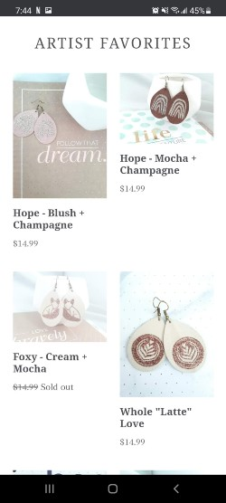

Hick's Law
Costa VidaCosta Vida's Website makes it easy to see what their purpose is. To get you to order food. Its easy, simple and clean. it shows the concept of "Hick's Law" perfectly by making it easier to choose what to do by giving the user only a few options.
White Space & Clean Design
Cal RanchCal Ranch Store's Website is a great example of white space. There may be alot going on on the front page but it breaks it up well and gives you enough white space to rest your eyes. It also has a clean, organized design. You can clearly tell the purpose they are trying to get across.
PARC: Proximity
Ponies to Pearls Ponies to Pearls also doesn't have alot going on but the little is does have makes sure that you can tell which parts go together. You can tell which products the owner has marked as "ARTIST FAVORITES".